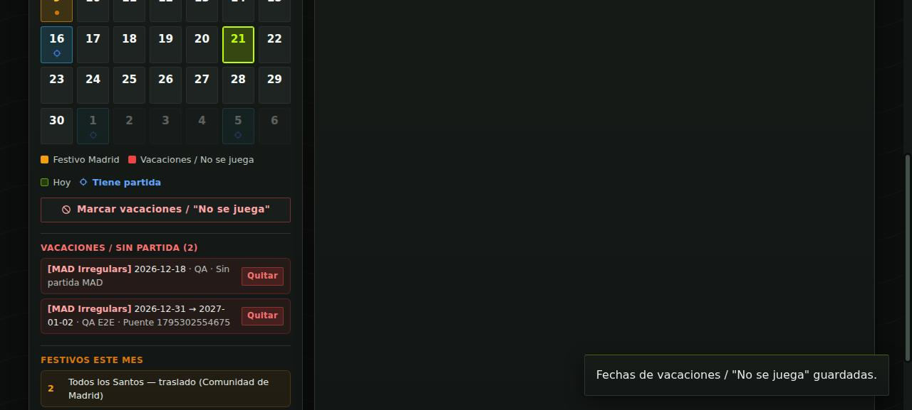
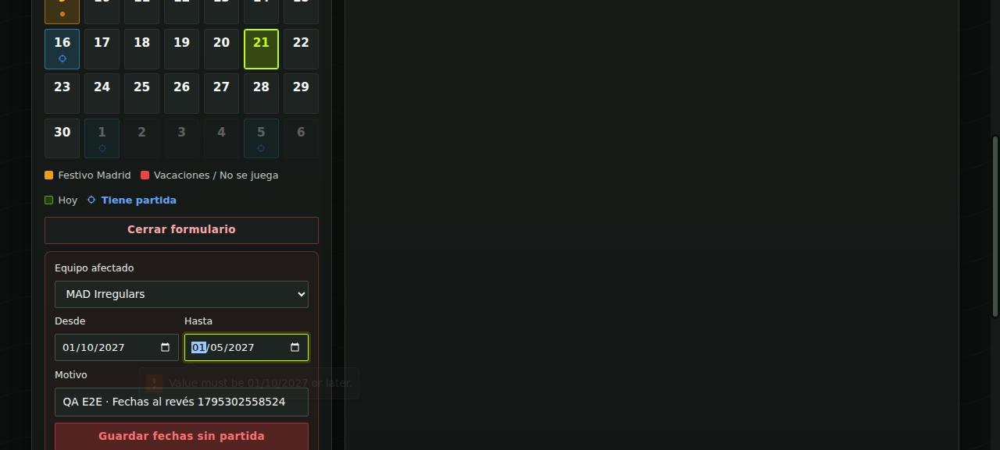
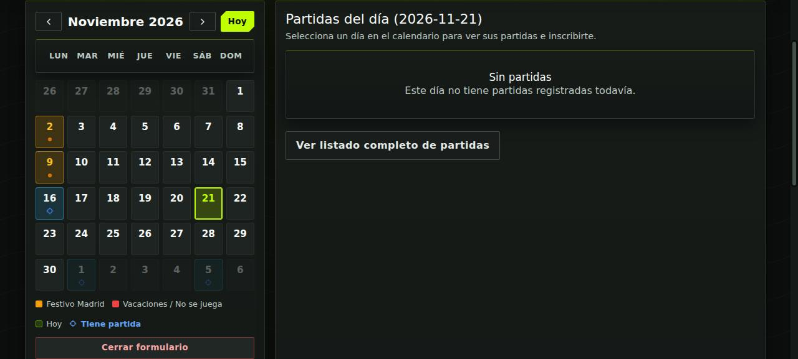
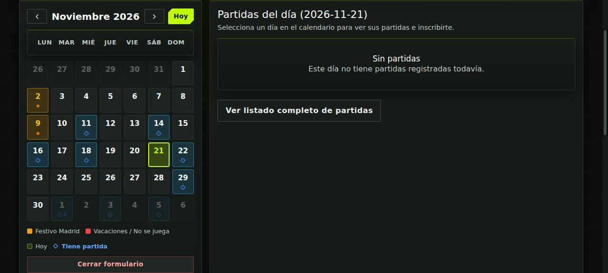
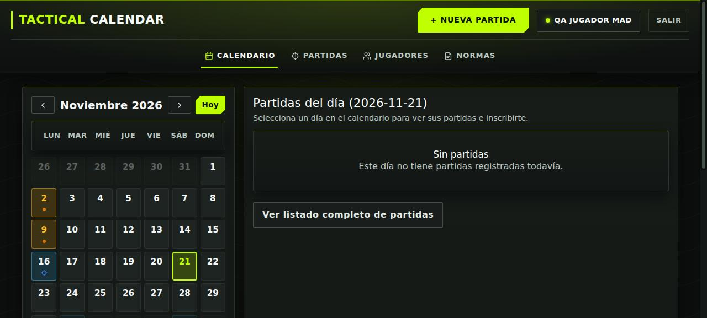
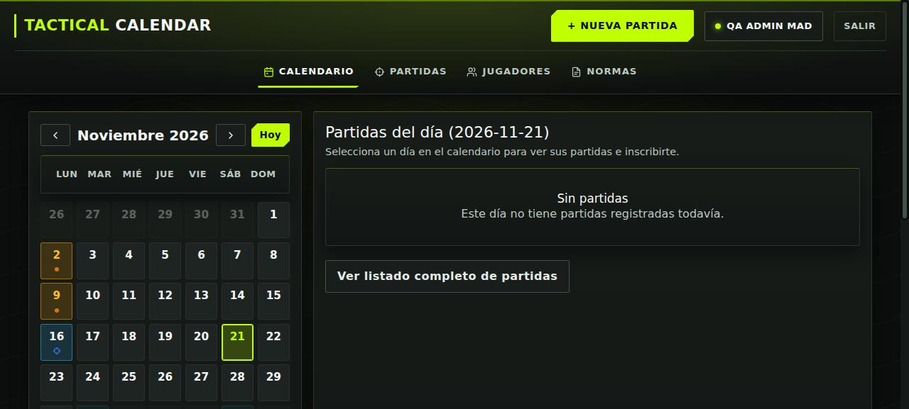
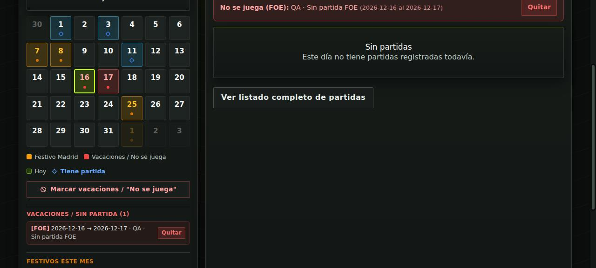

Informe de Selenium Java
Suite h-calendario · tactical-calendar · 22/11/2026, 0:09:34 · 18.5 s
100%Tasa de éxito (7 de 7)
7Pasan
0Fallan
0Omitidos
| Pasa | TC-H01 Un admin marca fechas sin partida para su equipo QA Admin MAD Captura |
4.2 s |
| Pasa | TC-H02 La fecha de fin no puede ser anterior a la de inicio QA Admin MAD Captura |
2.3 s |
| Pasa | TC-H03 Un admin de un solo equipo no puede marcar fechas para ambos QA Admin MAD Captura |
2.5 s |
| Pasa | TC-H04 El super admin puede marcar fechas para ambos equipos QA Super Admin Captura |
2.6 s |
| Pasa | TC-H05 Cada equipo solo ve sus fechas y un jugador no puede quitarlas QA Jugador MAD Captura |
2.5 s |
| Pasa | TC-H06 Un admin quita las fechas de su equipo y no persisten al recargar QA Admin MAD Captura |
3.9 s |
| Pasa | TC-H07 Un día sin partida se avisa al seleccionarlo en el calendario QA Admin FOE Captura |
2.4 s |